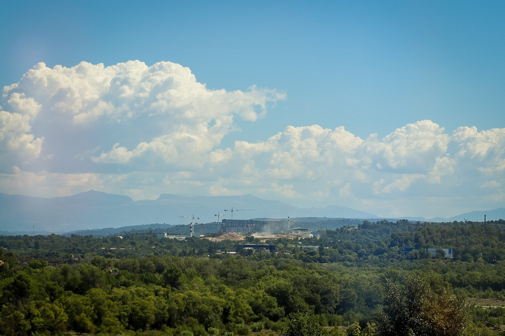

At a research centre in Provence
Why do researchers from so many countries work in one quiet valley in Provence?
On the second day of your (imagined) visit, your class meets researchers at work. You will need to introduce yourself at the reception, answer and ask a few simple questions, and find your way through a large building. In this lesson you also find out who does research in this part of Provence.
Prior knowledge
- Introducing yourselfchapter Bonjour ! Introducing yourself
- ITER and its seven memberschapter ITER: why, where and who
Core path: follow the steps in order. Besides calculations, the core path includes investigations, explanations and graphs. Tasks marked Optional give extra practice. Optional tasks: 2.
Think about it
It is nine o'clock on the second day of your class's (imagined) visit. Your bus stops in front of a large modern building among oak trees and dry hills. Inside there is a reception desk, a long corridor, a lift and many doors. Your appointment is at ten, with a physicist whose name you have on a piece of paper. People with badges walk past you, speaking French, English and other languages.
What will you say at the reception, and how will you find the right room?
Sentence starters
- At the reception I need to say …
- If I get lost, I can …
- I think the researchers come from …, because …
- A French research organisation I have heard of is …
Think about it: a visit to a workplace
What do you need to say when you arrive at a workplace you do not know: in Finland, and at an international research centre in France? Make a list. Then discuss: why would people from many countries work at the same place in Provence?
Discuss with a partner for three minutes, then write your list together.
Model answer
At the reception: greet, say our name, who we are (students from a Finnish school), who we have an appointment with and when. Later: ask where a room is, ask someone to repeat, thank. People from many countries work there because ITER is an international project: its members share the costs and the work, and they send their own engineers and scientists.
Assess your own answer
Tick the points your own answer already contains.
Review the theory.
Optional Warm-up: greeting and taking leave
Revise the first lesson with a short video. Note the expressions you hear for greeting someone (saluer) and for leaving (prendre congé). Tick the ones you already know from Bonjour ! Introducing yourself and say one new one to your partner.
Predict
Make your predictions before investigating 2 questions
Prediction 1: who runs Cadarache?
Prediction 2: asking for help
Investigate
Listen: at a research centre
Listen to each phrase, first slowly and then at normal speed, and repeat it aloud. The hints in italics use Finnish letters: capitals show the stressed syllable, õ, ã and ẽ are nasal vowels, è is an open e, ž is the s of English pleasure and š the Finnish š.
At the reception
Read the dialogue and notice three things: what Aino says about herself, how she checks that she understood the way, and how the conversation ends.
Meeting a researcher
What did you notice?
Theory
Science in France: CEA, CNRS and Cadarache
France has two large public research organisations:
- The CEA (Commissariat à l'énergie atomique et aux énergies alternatives) was created in 1945 under Charles de Gaulle, first for atomic energy. Since 2010 its name has included alternative energies. It has about 21,000 staff in nine centres in France (cea.fr, 2026).
- The CNRS (Centre national de la recherche scientifique) was founded in 1939. It is the largest public research body in Europe, with about 33,000 staff (2021), and does fundamental research in every field.
Cadarache is one of the CEA's centres. Research there began in 1959, and over 5,000 people work on energy: fission reactors and their fuel, nuclear waste, solar energy and fusion. Its tokamak Tore Supra (1988–2010) was rebuilt as WEST. On 12 February 2025, WEST held a plasma for 1,337 seconds (over 22 minutes), which the CEA called a world record for plasma duration: 25 % longer than China's EAST tokamak had managed a few weeks before.
ITER is not part of the CEA: it is a separate international organisation, built next to the Cadarache centre. On 28 June 2005, in Moscow, the ITER partners chose Cadarache instead of Rokkasho in Japan, and the ITER Agreement was signed in Paris on 21 November 2006. Today seven members (China, the European Union, India, Japan, Korea, Russia and the United States) work together there. As of November 2026, the start of research operation is planned for 2034.

Cadarache, ITER and Provence
Cadarache and ITER are in the commune of Saint-Paul-lez-Durance, in the department of Bouches-du-Rhône, in the region Provence-Alpes-Côte d'Azur. The site lies by the river Durance, among dry hills and oak woods, about 35 km north of Aix-en-Provence. Because the staff come from many countries, an international school opened in nearby Manosque in 2007 for their children.
Asking for help and finding the way
At a research centre you speak to adults at work, so you use vous. A polite request has four parts:
- get attention: Excusez-moi or Pardon, with madame or monsieur;
- say what you need: Je cherche … (I am looking for) or Où est … ? (Where is …?);
- be polite: s'il vous plaît;
- thank: Merci beaucoup, c'est très gentil. The answer is often Je vous en prie (You are welcome).
The directions you hear most often:
| French | English |
|---|---|
| à gauche | on the left, to the left |
| à droite | on the right, to the right |
| tout droit | straight on |
| au bout du couloir | at the end of the corridor |
| à côté de … | next to … |
| en face de … | opposite … |
| au rez-de-chaussée | on the ground floor |
| au premier étage | on the first floor (one level up) |
Careful with floors. In France the ground floor is the rez-de-chaussée, and the premier étage is the floor above it. In Finland that floor is the toinen kerros.
Summary
| You want to … | You say |
|---|---|
| introduce yourself | Bonjour, je m'appelle … Je suis lycéen / lycéenne. |
| say where you come from | Je viens de Finlande, d'Espoo, près d'Helsinki. |
| say why you are here | Nous visitons ITER avec notre classe. J'ai rendez-vous avec … |
| ask a simple question | Qu'est-ce que vous faites ici ? Vous venez d'où ? |
| ask for help | Excusez-moi, madame. Vous pouvez m'aider, s'il vous plaît ? |
| ask the way | Je cherche la cafétéria. Où sont les toilettes, s'il vous plaît ? |
| check you understood | Vous pouvez répéter plus lentement ? À gauche, puis tout droit ? |
| thank | Merci beaucoup, c'est très gentil. |
Countries: de Finlande, d'Inde, d'Italie (feminine countries, and every country that starts with a vowel), but du Japon, du Canada (masculine) and des États-Unis (plural).
Back to your predictions
Compare your two predictions with the theory. Then answer the opening question in English in one or two sentences: why do researchers from so many countries work in one quiet valley in Provence?
Would you change your prediction?
Examples
Once you have studied the chapter's theory, move on to the guided examples. In the first you follow a worked solution step by step; in the next ones you make the choices yourself, and the hints help if you get stuck.
Follow the directions
Use the plan in the section Asking for help and finding the way.
Where are you from?
Role-play: arriving at the research centre
Work in pairs with the plan of the building. Round 1: A takes card A, B takes card B. Round 2: swap: A takes card D, B takes card C. Open only your own card below and do not show it. Speak without writing first; the word bank is a safety net.
Word bank
Bonjour, madame / monsieur, Je m'appelle …, Je suis lycéen / lycéenne, Je viens de / d' / du / des …, J'ai rendez-vous avec …, Excusez-moi, Je cherche …, Où est … ?, à gauche, à droite, tout droit, au bout du couloir, à côté de, en face de, au premier étage, Vous pouvez répéter plus lentement ?, Merci, c'est très gentil, Je vous en prie
Sentence starters
- Bonjour, monsieur. Je m'appelle … J'ai rendez-vous avec …
- Je suis lycéenne à …, en Finlande.
- Excusez-moi, madame. Je cherche …
- Qu'est-ce que vous faites ici ?
- Vous venez d'où ?
- À droite, puis au bout du couloir ? Merci beaucoup !
The receptionist or researcher: Je peux vous aider ?, Voici votre badge., C'est au premier étage., Je viens du Japon., Je travaille sur les aimants.
Visitor only Round 1, card A: visitor
You are a Finnish student on a visit. Introduce yourself at the reception (name, school town, why you are here, your appointment at 14 h with Dr Rossi). Then ask how to find the library. Check that you understood, and thank.
Receptionist only Round 1, card B: receptionist
Welcome the visitor, ask where he or she comes from, and give a badge. Dr Rossi is Italian and works on the first floor. Give the way to the library with the plan above. If the visitor asks you to repeat, repeat more slowly.
Visitor only Round 2, card C: visitor
You arrive late and you are lost. Stop a researcher in the corridor, explain who you are, and ask for help to find the conference room and the toilets. Ask one question about the researcher's work.
Researcher only Round 2, card D: researcher
Choose your country (Japan, India, Korea, the United States …) and your work (the magnets, the vacuum vessel, the computers). Answer the visitor's questions and give the way with the plan above.
Role-play: your dialogue
After both rounds, write the French of round 1 or round 2, at least eight lines.
Perform the role-play with a partner first, then write it together. If you can, perform it for another pair, who follow the directions on the plan and check where you end up.
Model answer
Round 1:
- B : Bonjour, monsieur. Je peux vous aider ?
- A : Bonjour, madame. Je m'appelle Eetu Korhonen. J'ai rendez-vous avec le docteur Rossi à quatorze heures.
- B : Vous venez d'où ?
- A : Je viens de Finlande. Je suis lycéen à Espoo. Nous visitons ITER avec notre classe.
- B : Bienvenue ! Voici votre badge. Le docteur Rossi travaille au premier étage. Prenez l'ascenseur, à droite.
- A : Merci. Excusez-moi, je cherche aussi la bibliothèque.
- B : C'est à gauche, en face des toilettes.
- A : Pardon, vous pouvez répéter plus lentement ?
- B : À gauche… en face des toilettes.
- A : À gauche, en face des toilettes. Merci beaucoup, c'est très gentil !
- B : Je vous en prie. Bonne visite !
Assess your own answer
Tick the points your own answer already contains.
Review the theory.
Optional Extension: a short cultural investigation
Choose one: the CNRS, the CEA's centre at Saclay, the WEST tokamak, or the international school in Manosque. Find two facts about it on its own website or on Wikipédia (in French if you can: look for the numbers, the names and the words you recognise). Present them to another pair in English, with one French word you learned, and say where you found each fact and when it was written.
Self-check
Finally, assess whether you have reached the chapter's goals. If an answer is wrong, you get a suggestion of what to review.
1. Concept task: Where do they come from?
2. Concept task: Which floor?
3. Concept task: ITER and Cadarache
4. Explanation task: Write: a message to the researcher
Before the visit, write a short message in French (five or six sentences) to the researcher who will meet your class: greet, introduce yourself, say where you come from and why you are coming, ask one simple question about his or her work, and ask where you should meet. End politely.
Model answer
Bonjour, madame Sharma,
Je m'appelle Aino Virtanen. Je suis lycéenne à Espoo, près d'Helsinki, en Finlande. Le 14 mai, nous visitons ITER avec notre classe de physique. Qu'est-ce que vous faites à ITER ? Où est-ce que nous vous retrouvons : à l'accueil ou au premier étage ?
Merci beaucoup et à bientôt !
Aino
Assess your own answer
Tick the points your own answer already contains.
Review the theory.